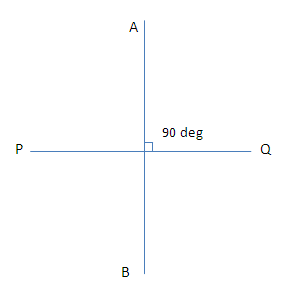

Two lines or planes are orthogonal if they are at right angles (90°) to each other.
In the image below, the lines AB and PQ are orthogonal because they are at right angles to each other. In geometry, the word 'orthogonal' simply means 'at right angles'. We also sometimes say they are 'normal' to each other.
Strictly speaking, the lines do not have to actually intersect. Two line segments can be orthogonal even if they do not cross. They just have to be at 90° to each other.

When used outside of geometry, the word "orthogonal" can take on a more general meaning. Then, it tends to mean that two things are independent. It means you can vary one of them without affecting the other.
In the figure above, if you imagine a point moving along the line PQ, it always stays in the same place along the line AB - it does not move up and down. It is in this sense that PQ is orthogonal to AB. In coordinate geometry, the x and y coordinates of a point are orthogonal - you can vary one without affecting the other.